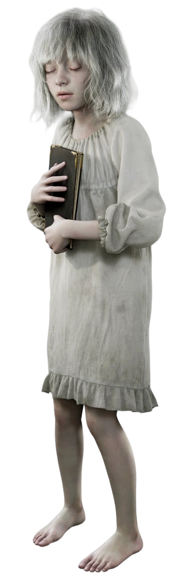
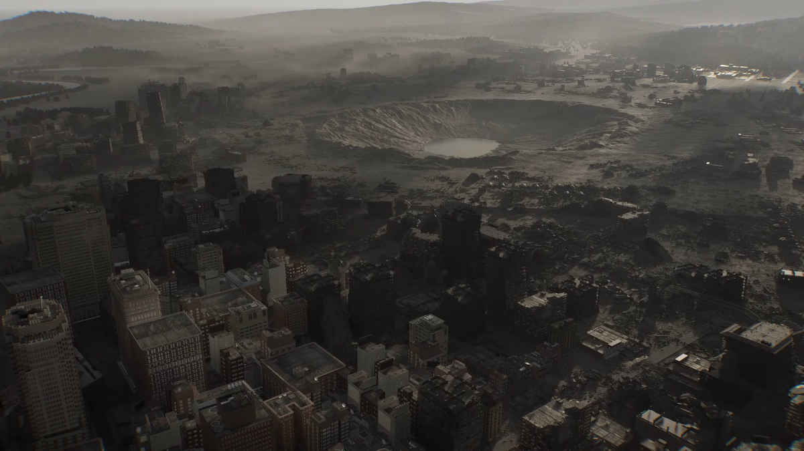
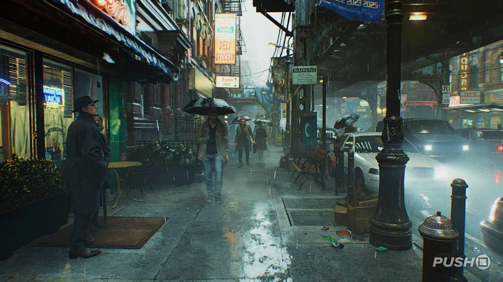

Personagens

Leon S. Kennedy

Emily
.jpeg)
O terror nunca morre...
"Resident Evil: Requiem" é o mais recente capítulo da icônica série de jogos de terror. Desenvolvido pela Capcom, este título promete levar os jogadores a uma jornada aterrorizante através de Raccoon City, onde um surto viral transformou os habitantes em zumbis sedentos por sangue. Com gráficos impressionantes, jogabilidade intensa e uma narrativa envolvente, "Resident Evil: Requiem" é uma experiência imperdível para os fãs do gênero de terror.

Em "Resident Evil: Requiem", a cidade de Raccoon City é devastada por um surto viral que transforma seus habitantes em zumbis sedentos por sangue. Leon S. Kennedy, um policial novato, se une a um grupo de sobreviventes para enfrentar hordas de mortos-vivos e desvendar os segredos por trás do desastre. Enquanto lutam pela sobrevivência, eles descobrem uma conspiração sinistra envolvendo a Umbrella Corporation, a empresa responsável pelo vírus. Com ação intensa e momentos de suspense, "Resident Evil: Requiem" é uma jornada aterrorizante pela luta contra o apocalipse zumbi.
Lugares do jogo "Resident Evil: Requiem"

A cidade de Raccoon City é o cenário principal do jogo, onde ocorre a maior parte da ação.

Wrenwood é uma cidade vizinha a Raccoon City, que também é afetada pelo surto viral.
O Centro de Cuidados é um hospital onde os sobreviventes buscam refúgio e tratamento para suas feridas.

A Loja de Armas do Kendo é um local onde os jogadores podem encontrar armas e equipamentos para enfrentar os zumbis.
Confira o trailer oficial de "Resident Evil: Requiem" para ter um vislumbre do terror que aguarda os jogadores.